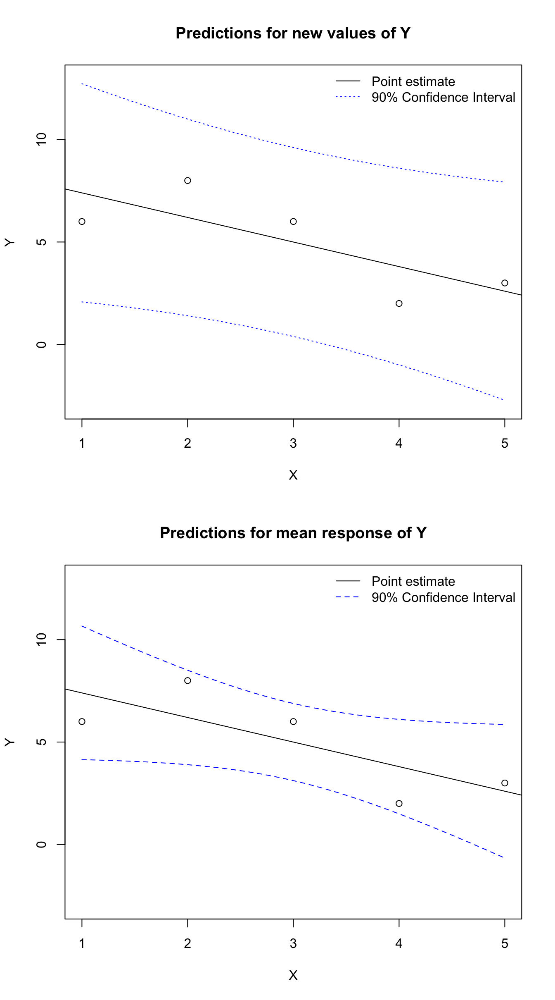

So far, we have dealt with simple regression, which uses only a single predictor variable \(X\). The math of this model is easier to present and also easier to illustrate, but this perspective limits the theory we can present and the types of problems we can solve. Now we will consider the more general form of multiple regression.
Terminology and solution
Consider, as before, a random variable \(Y\) distributed according to a Normal distribution with a fixed variance \(\sigma^2\) and a mean dependent on the values of one or more random variables \(X_1,\ldots,X_k\). In this notation, \(k\) represents the number of predictors, and for each \(j,\; 1 \le j \le k,\; X_j\) is a different random variable.
Now suppose that we have samples from these random variables: some vector of our response variable \(\boldsymbol{y}\) along with predictor vectors \(\boldsymbol{x}_1,\ldots,\boldsymbol{x}_k\). Each vector contains \(n\) observations. We could write out a relationship arithmetically, observation by observation:
However, we can save space and afford ourselves new analytical tools by using a linear algebraic notation. First, note that \(\beta_0 = \beta_0 \cdot 1\), so that we may write
\[\begin{aligned} y_1 &= \beta_0 1 + \beta_1 x_{1,1} + \cdots + \beta_k x_{k,1}+ \varepsilon_1 \\ y_2 &= \beta_0 1 + \beta_1 x_{1,2} + \cdots + \beta_k x_{k,2}+ \varepsilon_2 \\ \vdots \\ y_n &= \beta_0 1 + \beta_1 x_{1,n} + \cdots + \beta_k x_{k,n}+ \varepsilon_n \end{aligned}\] Next, we collect these equations together by collapsing them vertically. Define the vector of ones \(1\!\!1 = (1,1,\ldots,1)\) with total length \(n\). Then we can consider this vector of ones as a predictor in the model, multiplied by a beta just like all the other predictors. This creates a matrix of predictors formed by combining each predictor vector, including \(1\!\!1\):
Now we can collapse the entirety of the model into a few symbols. The response vector will be the matrix-product of the predictor matrix and a vector of unknown betas, plus a set of Normally distributed errors:
\[\boldsymbol{y} \sim \textrm{MVNormal}(\mathbf{X}\boldsymbol{\beta},σ^21\!\!1 )\] Notice in either case that \(1\!\!1\), the column of ones, is being treated just like any other predictor, and that \(\beta_0\), the intercept, is being treated just like any other beta/slope.
Now we wish to find the data-based estimators for \(\boldsymbol{\beta}\), that is, the intercept and slope(s) of the line-of-best-fit for our data.2 As before, it can be shown that the least squares and maximum likelihood methods both find exactly the same solutions, since they end up minimizing the same sum. A sketch of the proof can be found in the appendix, but the basic result is found below:
In plainer terms, maximum likelihood and least squares agree on a solution for the betas which can be computed directly (and in one pass) from your data. Compared to machine learning models which often require a huge amount of storage space and processing power, this is an extremely lightweight method which produces exact, replicable solutions from almost any environment that can read the data.
Bias in the estimator for error variance
We now have a solid way of estimating the intercept and slopes of a multiple regression line, i.e. the betas. Both maximum likelihood and least squares techniques arrive at the same set of betas. However, least squares techniques offer no way for us to estimate the error variance \(\sigma^2\), because the least squares solution does not place any distributional assumption on these errors. We can estimate \(\sigma^2\) using maximum likelihood, but its estimator for the error variance is provably biased; specifically, it underestimates the true variance. The proof of this must be left for an appendix, as the general case involves a good deal of vector calculus and linear algebra, but I can supply the intuition:
First, recall that our uncertainty in an estimate shrinks as we gain more data. That’s why calculations for variance typically divide by \(n\) (the sample size). As \(n\) increases, our uncertainty decreases.
However, our estimator for the \(\sigma^2\) is necessarily a function of the estimated betas, \(\hat{\boldsymbol{\beta}}\) and not the true betas, \(\boldsymbol{\beta}\). These estimated betas are also a function of the data (\(\boldsymbol{y}\) and \(\mathbf{X}\)).
Therefore, we don’t really have \(n\) fully independent sets of observations from which to estimate \(\sigma^2\). The values of some of those observations are constrained by our choices for \(\hat{\boldsymbol{\beta}}\), which is an input for our estimator \(\hat{\sigma}^2\).
This interdependence between estimators means that a variance estimated using \(\hat{\boldsymbol{\beta}}\) provides us with less certainty than we would expect from \(n\) observations; effectively, only the same certainty as \(n-k-1\) fully independent observations would provide us.3
Note
Assume a Normally-distributed variable \(Y\) whose mean is determined by a vector of ones \(1\!\!1\) and one or more other random variables \(\mathbf{X} = X_1,\ldots,X_k\) such that \(\mathbf{X} = [1\!\!1,\boldsymbol{x}_1,\boldsymbol{x}_2,\ldots,\boldsymbol{x}_k]\) and:
Furthermore, assume that the parameters \(\boldsymbol{\beta}\) are estimated as \(\hat{\boldsymbol{\beta}} = (\mathbf{X}^T \mathbf{X})^{-1} \mathbf{X}^T \boldsymbol{y}\), that \(\boldsymbol{y}\) is estimated as \(\hat{\boldsymbol{y}} = \mathbf{X}\hat{\boldsymbol{\beta}}\) and that RSS takes its usual meaning, i.e.\(\sum_i (y_i - \hat{y}_i)^2\). Then we may say that the following estimator for \(\sigma^2\) is unbiased:
\[\hat{\sigma}^2 = \frac{\mathrm{RSS}}{n-k-1}\]
From here on, we will abandon the biased maximum likelihood estimator \(\hat{\sigma}^2_{\mathrm{ML}} = \mathrm{RSS}/n\) and instead use the unbiased estimator \(\hat{\sigma}^2 = \mathrm{RSS}/(n - k - 1)\).
New capabilities made possible by distributional assumptions
Moving from a least squares approach to a maximum likelihood approach requires us to introduce strong assumptions about the data, including that \(Y\) is conditionally Normal and that its mean varies linearly with the values of one or more predictors \(X\). Assumptions such as these are limiting, because the model may no longer fit certain use cases that could still be approached through a least-squares perspective. However, the tradeoff for these limitations is that we can assess and interpret our models in new ways, and solve new types of problems that we couldn’t before. This section focuses on how we use the distributional assumptions to gain new capabilities.
We will cover the distributional assumptions of linear regression in more detail in the next chapter, but for now let me summarize some of the most important assumptions:
Note
Assume a relationship between a response variable \(Y\) and one or more predictor variables \(\boldsymbol{X}\) (typically but not necessarily including the vector of ones, \(X_0=1\!\!1\)). We say that the relationship between the response and the predictors satisfies the assumptions of ordinary least squares (OLS) regression if:
\(Y\)varies linearly with\(\boldsymbol{X}\). Specifically, we assume that the mean of \(Y\) can be expressed as a linear combination of the predictors:
Each of these equations are consistent with each other, and reinforce the abstraction which lurks behind our data. The sample \(\boldsymbol{y}\) which we are studying was generated by a random variable \(Y\) according to an unknown (but estimable) probability distribution.
The error variance displays homoskedasticity. The variance of \(Y\) around its mean is exactly the same size for all predictor choices. This does not mean that the errors are all the same size, simply that they are all drawn from the same distribution. Rather than saying that each observation has a unique error variance, \(\sigma_i^2\), we say they all share the same error variance: \(\sigma^2\).
The errors are independent of each other and of the predictors. Mathematically we could write that,
But here is a case where I think plain language (bolded, above) is the most straightforward. As an aside, many of the results which follow will still be true under the slightly weaker condition that the errors are uncorrelated with each other rather than truly independent.
Assumptions 2–4 above are sometimes known as the IID assumptions for linear regression because the errors are required to be (i)dentically and (i)ndependently (d)istributed normally. With these assumptions, the linear regression model gains some new analytical features.
Confidence intervals and tests for the locations of the betas
Previously, we used Least Squares to find point estimates for the beta parameters (the intercept and slopes). We identified the line of best fit, but could not measure which lines were also reasonably well-fit to the data, or which lines could plausibly be the real relationship between the response and the predictors. Now, with a distributional assumption for \(Y\), we can.
Note
Assume a relationship between a response variable \(Y\) and \(k\) predictor variables \(X_1,\ldots,X_k\) which meet the assumptions of ordinary least squares (OLS) regression, and use all the usual notation so far for its parameters, distributional form, and samples
Each estimated intercept or slope _j is Normally distributed around its true value \(\beta_j\), with a standard error of \(\mathrm{s.\!e.}(\hat{\beta}_j)= \hat{\sigma}\sqrt{(\mathbf{X}^T \mathbf{X})^{-1}_{j,j}}\)
A hypothesis test for whether the true parameter \(\beta_j\) might equal some candidate value \(b_j\) can be performed as follows:
The bounds for a symmetric, two-sided \(1-\alpha\) confidence interval for the true location of the parameter \(\beta_j\) can be approximated as follows:
These last two results allow us to test whether one of the true slopes \(\beta_j\) might be different than the best guess afforded by our data, \(\hat{\beta}_j\), and indeed allows us to find the whole range of likely values for \(\beta_j\). In practice, these calculations are rarely done by hand, but easily computed from any statistical software output.
Distributions for a predicted value and for a predicted mean response
Before we added distributional assumptions, we could still make a point estimate for the value of \(Y\) at a specific combination of predictors, using the estimated relationship \(\hat{Y} = \boldsymbol{X\hat{\beta}}\). Now we can add a distribution around this prediction.
The distribution is helpful because new values of \(Y\) won’t be exactly where we predict it, but more likely somewhere nearby. The distribution allows us to place reasonable bounds on how far off we might be.
When we make predictions for \(Y\) we need to distinguish between two types of prediction, which share the same point estimate yet have different variances:
We can make a prediction for the true mean response\(\mu_0 = \mathbb{E}[Y|\boldsymbol{X}=\boldsymbol{x}_0]\). In plain language, we want to know, “how far away would many observations at this location cluster?” Our main source of error is from the estimated betas, and when our sample size is high our predictions will have a low standard error.
Alternatively, we can make a prediction for a new value of\(Y\) when \(\boldsymbol{X}=\boldsymbol{x}_0\). We expect that these values fall far from our prediction, because they are influenced by two different errors. First, as above, our uncertainty about the true betas will mean that the new values cluster somewhere different than where we predict. And second, individual values can be found near or far from the center of the cluster, depending on the variance \(\sigma^2\). New values can easily fall \(2\sigma\) or farther away from the mean \((\mu_0)\). Because of this second error, our predictions for a single observation will generally have a high standard error.
Note
Assume a relationship between a response variable \(Y\) and \(k\) predictor variables \(X_1,\ldots,X_k\) which meet the assumptions of ordinary least squares (OLS) regression, and use all the usual notation so far for its parameters, distributional form, and samples
The point estimate for \(\mu_0\), the mean response of \(Y\) at a new predictor value \(\boldsymbol{x}_0\), is:
A symmetric, two-sided \(1-\alpha\) confidence interval for the true location of the mean response \(\mu_0\) when \(\boldsymbol{X} = \boldsymbol{x}_0\) is:
A symmetric, two-sided \(1-\alpha\) confidence interval for the true location of an unobserved value \(y_0\) when \(\boldsymbol{X} = \boldsymbol{x}_0\) is:
These new prediction tools allow us to give best- and worst-case scenarios for new predictions. As you can see in the figure below, the two prediction intervals are each centered around the line of best fit, but the estimated individual values \(\hat{y}_0\) are found in a wider interval than their means \(\hat{\mu}_0\). You’ll also notice that both intervals “flare” a little toward the far left and right sides of the graph. This is because we do not know the true linear relationship, but we do assume that it must pass through the middle of the data, i.e. the line-of-best-fit must pass through the point \((\bar{x},\bar{y})\). Therefore, near the middle of the data, our error from estimating the parameters \(\boldsymbol{\beta}\) will be relatively small. But if we have the slopes wrong, then the small degree of “tilt” away from the true values will create quite large errors in our predictions at locations far from the center of the data.
Code
X <-c(1,2,3,4,5)Y <-c(6,8,6,2,3)y0 <-predict(lm(Y~X),newdata=data.frame(X=seq(1,5,0.1)),level=0.9,interval='prediction')mu0 <-predict(lm(Y~X),newdata=data.frame(X=seq(1,5,0.1)),level=0.9,interval='confidence')par(mfrow=c(2,1))plot(X,Y,ylim=c(-3,13),main='Predictions for new values of Y')abline(reg=lm(Y~X))lines(seq(1,5,0.1),y0[,2],lty=3,col='#0000ff')lines(seq(1,5,0.1),y0[,3],lty=3,col='#0000ff')legend(x='topright',bty='n',lty=c(1,3),col=c('#000000','#0000ff'),legend=c('Point estimate','90% Confidence Interval'))plot(X,Y,ylim=c(-3,13),main='Predictions for mean response of Y')abline(reg=lm(Y~X))lines(seq(1,5,0.1),mu0[,2],lty=2,col='#0000ff')lines(seq(1,5,0.1),mu0[,3],lty=2,col='#0000ff')legend(x='topright',bty='n',lty=c(1,2),col=c('#000000','#0000ff'),legend=c('Point estimate','90% Confidence Interval'))

Figure 14.1: Prediction intervals for OLS regression
“MVNormal” here indicates a multivariate Normal distribution defined by a vector of means and a corresponding vector of variances, a straightforward extension of the Normal distribution we already know.↩︎
“Line-of-best-fit” is now just an analogy, really what we are doing is projecting a high-dimensional vector \(\boldsymbol{y}\) (which exists in an \(n\)-dimensional vector space) into a lower-dimensional space spanned by the predictors (at most \((k+1)\)-dimensional, where \(k\) is the number of predictors other than the vector of ones). It would be more accurate to say we are finding the “hyperplane-of-best-fit”, but this might cause some consternation…↩︎
In the simplest case, for a single observation \(y_1=10\), we could model the mean as \(\hat{\mu}=\hat{y}=10\). But if we then calculate the variance as \(\hat{\sigma}^2 = \sum_i(y_i-\hat{\mu})^2/n = (10-10)^2/1 = 0\), clearly our estimate would be biased.↩︎